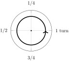
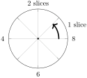
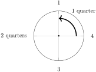

First, it is helpful to step back and understand the idea of how angles can be measured.
Degrees are a unit of rotation defined such that 360 degrees make a full rotation. They are useful practical applications (historically, for navigation, architecture, and astronomy), because you can divide 360 evenly into many numbers (like 2, 3, 4, 5, 6, 8, 9, 10, 12, etc.), so many common angles have whole number values (like
\(30^{\circ}, 45^{\circ}, 60^{\circ}, 90^{\circ}\text{,}\) etc.).
However, if we were starting from scratch, with no prior knowledge of degrees, we could consider other useful units of measuring angles. For example:
-
The
gradian, where a quarter rotation is defined to be 100 gradians. Then, a full rotation would be 400 gradians.
-
Or, 1
turn could be defined as a full rotation. Then, a half rotation is
\(\frac{1}{2}\) turns, or a quarter rotation is
\(\frac{1}{4}\) turns.

-
For units inspired by the fact that a pizza has 8 slices, a unit could be called a
slice, defined to be
\(\frac{1}{8}\)th of a full rotation. Then, 8 slices would be a full rotation.

-
We could define 1
quarter to be a quarter rotation. Then, 4 quarters is a full rotation.

Ultimately, units are a convention, and what units are useful or most natural depends on the context.